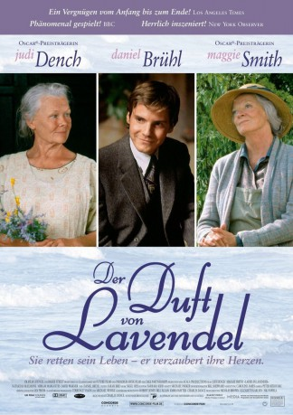

#6853 Der Duft von Lavendel
Alternativ: Ladies in Lavender
 
 IMDB-Wertung: 7.1 / 10
IMDB-Wertung: 7.1 / 10  Metascore: 0
Metascore: 0 
Die beiden Schwestern Ursula und Janet Widdington leben ein idyllisches Leben in ihrem kleinen Häuschen an der Küste Cornwalls, bis nach einem Schiffbruch eines Tages der Pole Andrea strandet. Die beiden beginnen sich liebevoll um den kranken Ankömmling zu kümmern, der nichts mehr von seinem Schiffbruch weiß.
Jahr: 2004
Dauer: 99 Minuten
FSK: 0
Land: England Studio: EuroVideoTonspuren: DD2.0 - ,
Untertitel:
Auflösung: 1080p (1920x1080) Größe: 5980 MB
Genre: Drama, Musik, Liebe
Regisseur: Charles Dance
Drehbuch: William J. Locke
Soundtrack:
Darsteller:
Datei: X:\2004(A-F)\Duft von Lavendel, Der (2004, FSK0, 1920x1080).mkv seit 04.09.2017
Festplatte: HD 2003-2004-2005(A-F)
 Es gibt insgesamt 39 Filme in der Gruppe '2004(A-F)'
Es gibt insgesamt 39 Filme in der Gruppe '2004(A-F)'